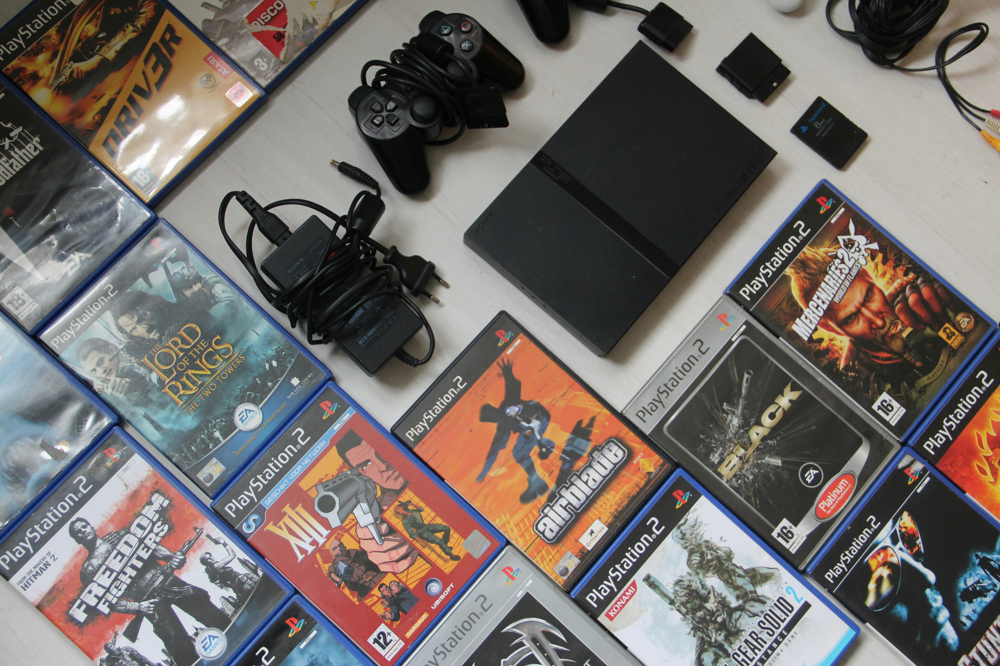

The start of video games all happened because of some research scientists in a lab. In 1952, British professor A.S. Douglas created OXO, also known as noughts and crosses or a tic-tac-toe. Then Tennis for Two on a large analog computer was created in 1958, by William Higinbotham. The most popular game back then though, came out in In 1962. Steve Russell invented Spacewar and it was a computer-based space combat video game for the PDP-1. People loved it because it could be played on multiple computer installations for the first time. Once 1985 hit the video game console called "The Nintendo Entertainment System" and made amazing sales. People loved playing the game Super Mario Bros on it and is one of the highest-selling video game consoles yet offered.
 Video games Now
Video games Now
Gaming now makes more money than movies and sports combined together. Gaming reached $184 billion in 2022, and they believe more and more gamers will appear over the years. There are already gamers from almost every age. Thirty-eight percent of gamers are from ages eighteen to thirty-four. Consoles like Xbox S, PS5, and PC are what most gamers use now. Consoles you can buy from ranges of two-hundred to five-hundred but to get a good PC you'll have to spend one grand or way more. Consoles are simple and easy to use because you do not have to upgrade hardware, You have wireless controllers so you can be more active while playing. A Pc you can You can customize the hardware, GPU, RAM, Hard drive, or Solid State Drive and make the visuals the way you want. You can mod games on PC, and professional gamers rather use a mouse and keyboard to have the best accuracy, when playing shooting games and anything that involves aiming.
© 2024 Introduction to HTML